|
|
HELP FIND THE FOLLOWING LOCATIONS
PAGE 61
DANGER MAN:
The Key
(Seth Hold: 1959)
Unknown 1
– Drake and Logan go to the Bahnhof Hotel after learning that Logan's wife has booked a taxi to the hotel.
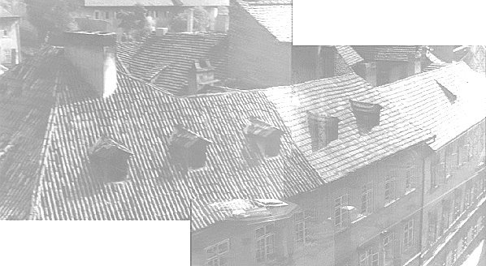
High Point 2, North Hill, Highgate – Drake goes to see Harry Logan at flat in Vienna.
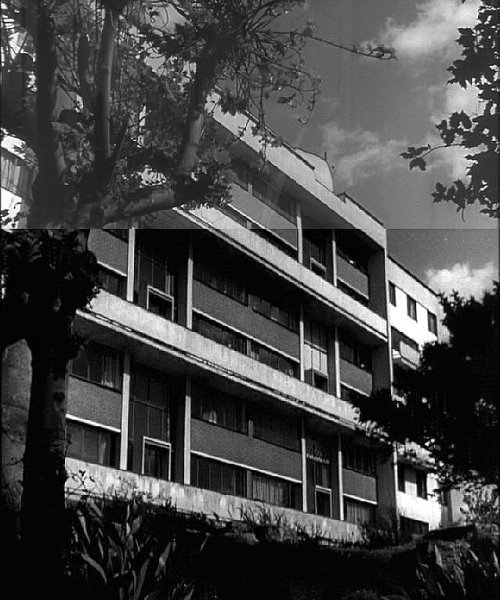
DANGER MAN:
The Battle
of The Cameras (Don Chaffey:
1964)
La Croisette,
Cannes, Alpes-Maritimes, France
– Drake is currently working
under cover in the South of France - Shot of coast from Drake’s hotel.
(Idenified by Sietse Postma, May 2022)
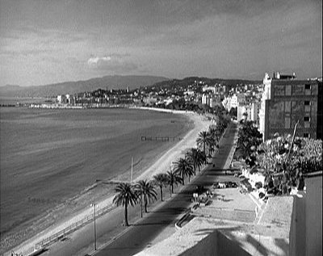
Plaza De San Juan de Dios,
Cadiz, Spain -
Drake’s Hotel, South of
France
(Identified by Geoff Dodd, may 2023)
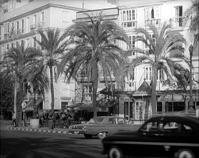
Hollywood Court, Deacons Hill Road, Elstree - One of Kent’s men takes photographs of Drake from a building overlooking his hotel.
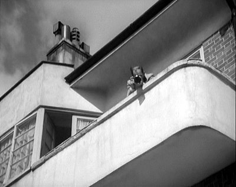
Unknown 1 - Cliffs below Martine’s apartment.
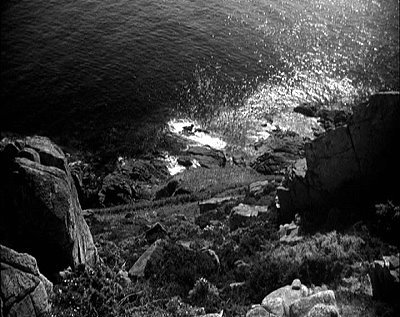
DANGER MAN:
A Room in the Basement
(Don Chaffey:
1964)
Unknown 1
- Keith Turbull
is kidnapped and driven away in
a van by Rumanian agents. His wife Susan (Jane Merrow)
steals a car and attempts to
follow.
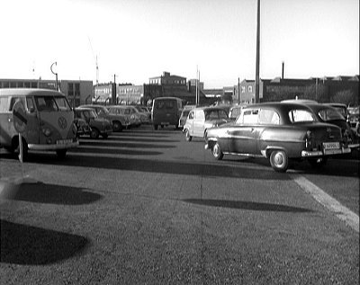
 The lamp posts is typical of Borehamwood.-
could be near the studio/Elstree Way.
The lamp posts is typical of Borehamwood.-
could be near the studio/Elstree Way.
L82, Brand, Austria
- Swiss mountains –
establishing shot Switzerland.
(Identified by Sietse Postma, May 2022)

Embassy of France, Technikerstraße 2, 1040 Vienna, Austria
- Establishing shot of
Susan Turbull’s
hotel.
(Identified by Sietse Postma, January 2024)
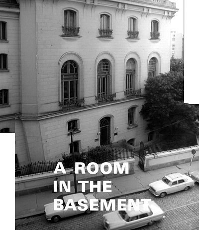
Wilderswil,
Interlaken-Oberhasli –
Bernhard’s Swiss farmstead in the
Mountains
(Identified by Antony Glauser, January 2012)
Schlössli Hotel, Unspunnenstrasse 8
(additional information from Daniel Bauer, May 2019)
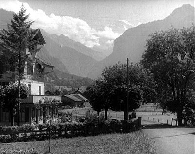
Unknown 4 – Drake goes to Luke’s flat to make his plans to rescue Keith Turnbull.
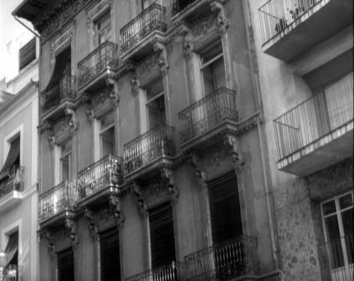
Schruns, Vorarlberg, Austria - Establishing shot Switzerland.

DANGER MAN:
Fair Exchange
(Charles Crichton: 1964)
Justizpalast, Munich
- Drake arrives
in East
Berlin.
(Identified by Paul Stroud, January 2014)
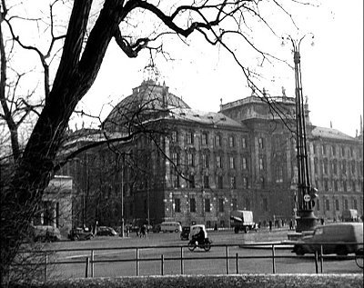
Unknown 1 - Site where car is parked and road on way to Pohlman’s country residence. Later Drake goes to the border to fake an attempted crossing.
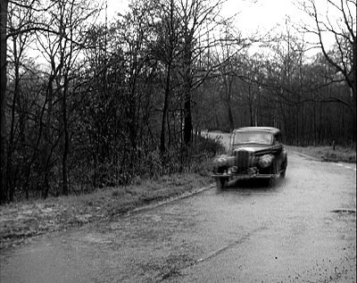
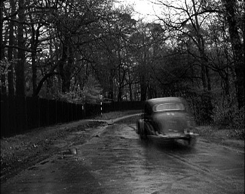
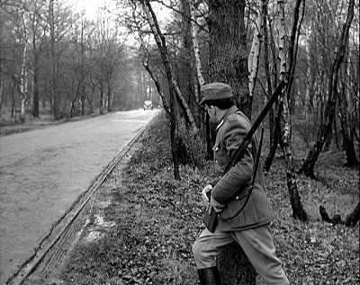
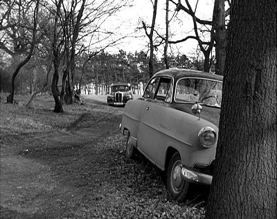
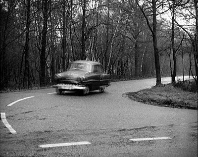
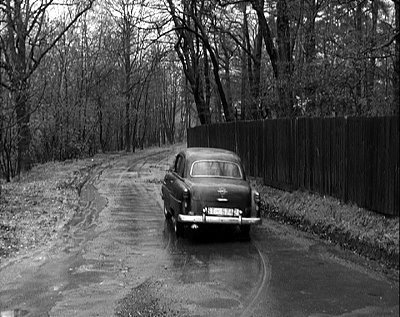
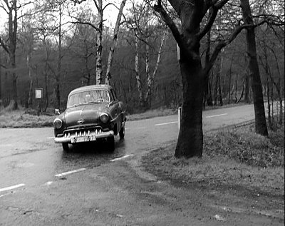
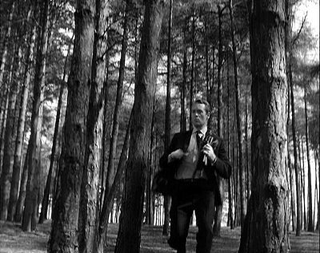
Unknown 2 - Farmhouse across the border in West Germany where Pieter is waiting for Drake’s instructions.
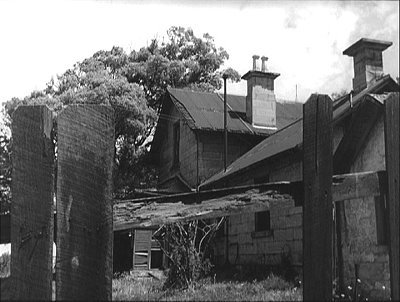
DANGER MAN:
Fish on a Hook
(Robert Day: March 1964)
Seattle-Tacoma International
Airport,
Washington, U.S.A. – Drake Flies into Egypt.
(Identified
by "Liffy 1M," subscriber to PPRuNe.org, alerted by Goldox, February
2022)

Unknown 1 – Gerdie drives Drake through the town to his flat.

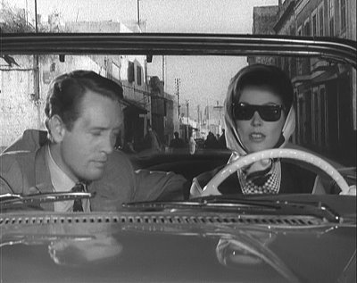


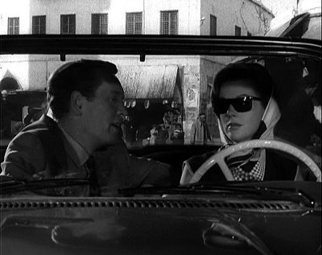
Unknown 2 – Gerdie takes Drake to a local restaurant for dinner.

Unknown 3 – Drake and Nadia make their escape to a waiting British cruiser.
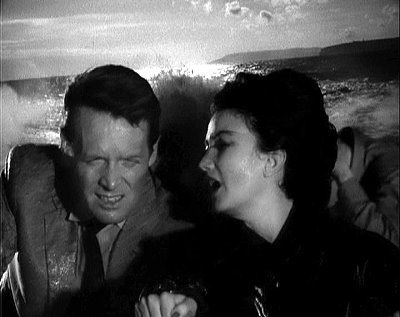
DANGER MAN:
No Marks For Servility
(Don Chaffey:
1964)
Omonia Square, Athens, Greece
– Barnares
is having a meeting with Mr. Avvram
in Athens.
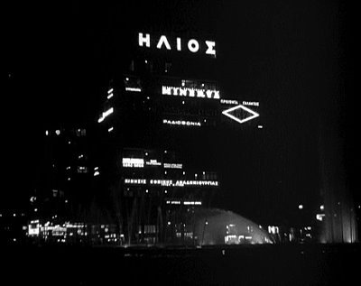
'Yakymour',
Le Cannet, Côte D’Azur, France
– The Barnarese's
rented villa.
(Identified by Geoff Dodd, January 2022)

Unknown 1 – Barnares signals to the house where Armstrong’s daughter is being held.
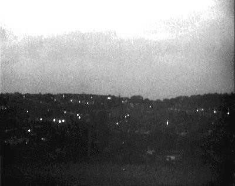
DANGER MAN:
Yesterdays Enemies
(Charles Crichton: 1964)
Plaza De San Juan de Dios, Cadiz,
Spain – Brett’s Beirut
office.
(Identified by Geoff Dodd, May 2023)
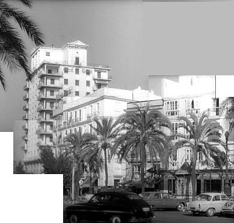
Unknown 2 – The BEA Comet with Drake and Archer aboard taxis to the runaway.

DANGER MAN:
A Date with Doris
(Quentin
Lawrence: 1964)
Unknown 1
– Home of Actress Conchita.
also in THE
SENTIMENTAL AGENT: The Scrolls of Alah
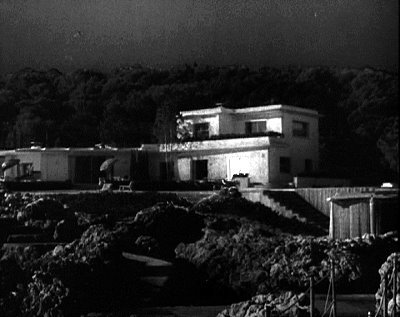
Sangster International Airport, Montego Bay – John Drake flies into Cuba posing as journalist John White.

Unknown 2 – Pan across bay to the hotel where Drake is staying.
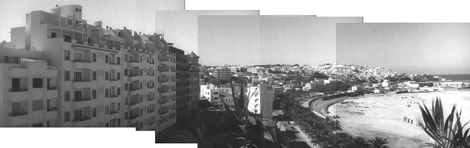
Unknown 3 – Drake arranges to meet Eduardo at The Bamboo Club.
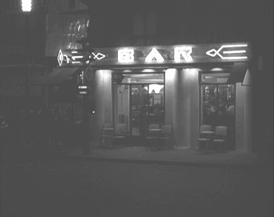
Bussaco
Palace Hotel, Estrada Florestal, Mealhada, Portugal
– John Drake is taken to
Joaquin Paratore’s
castle.
(Idenitfied by Paul
Stroud, May 2014)
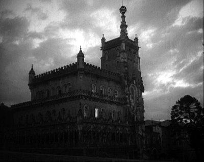
Unknown 4 – Drake drives Peter Miller to Miraflores.
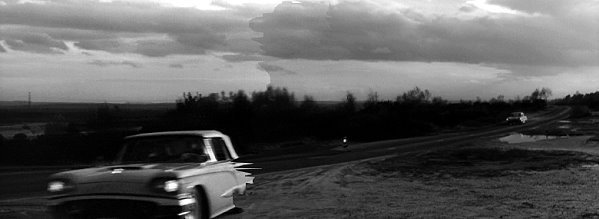
Unknown 5 – Miraflores bay.
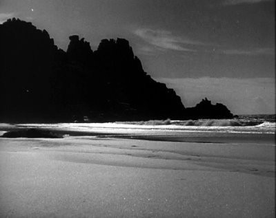
DANGER MAN:
Colony Three
(Don Chaffey:
July 1964)
Unknown 1
– Drake (Patrick McGoohan) manages to
find James Randall (Glyn
Owen) and spoil his escape attempt.
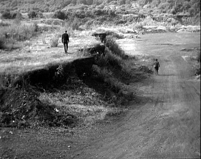
Unknown 2 – The train carrying Drake and Richardson speeds away from Colony Three.
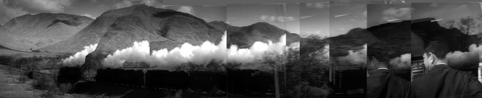
DANGER MAN:
It's up to the Lady
(Peter Maxwell: May 1964)
Panepistimiou Street, Athens, Greece - John Drake arrives in Athens on the trail of Paula Glover.
(Identified by Sietse
Postma, February 2025)

Think you know a spot? Need a bigger image? Email me.
< Previous | Index | Avengerland | Next >
Copyright © 2022 Anthony R. McKay